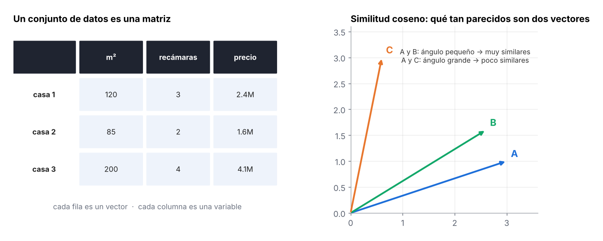
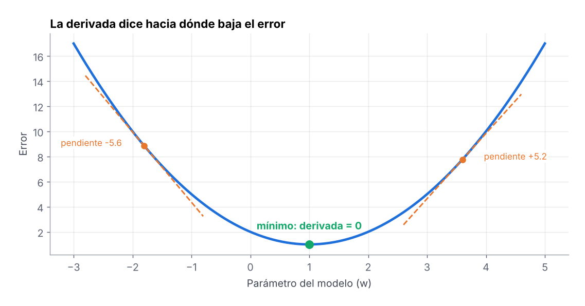
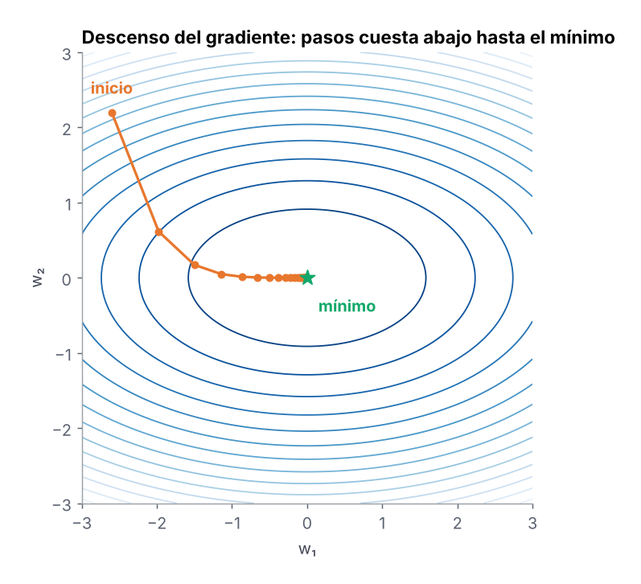
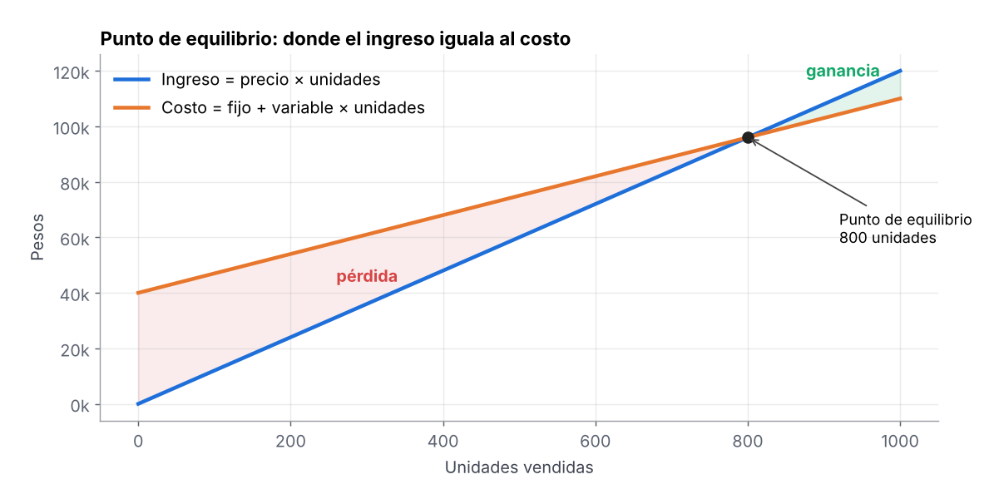
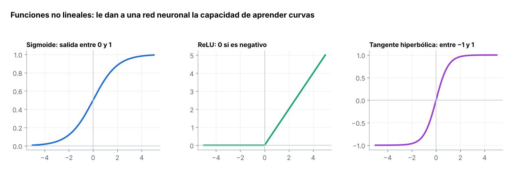

Las matemáticas y la estadística son fundamentales en la ciencia de datos, ya que proporcionan las bases teóricas y metodológicas para el análisis de datos y la creación de modelos predictivos. Estas son algunas áreas clave de las matemáticas aplicadas a la ciencia de datos.
1 Álgebra lineal
Es el lenguaje en el que viven los datos: una tabla es una matriz, cada fila es un vector y casi todos los modelos (regresión, redes neuronales, PCA) son operaciones entre matrices.
- Vectores y matrices: representación de datos.
- Producto matricial: cálculo eficiente en modelos; una red neuronal es, en esencia, una cadena de productos de matrices.
- Valores y vectores propios: reducción de dimensionalidad (la base de PCA).

La similitud coseno mide qué tan parecidos son dos vectores por el ángulo entre ellos. Se usa en sistemas de recomendación y en la búsqueda semántica de textos:
Cada cliente se representa como un vector con lo que ha visto. La similitud coseno mide si dos vectores apuntan hacia el mismo lado, sin importar cuántas películas vio cada uno.
Baja la página: la gráfica se va construyendo paso a paso.Ana ve sobre todo acción
En el último año vio 46 películas de acción y 11 de comedia. Ese par de números es su vector: una flecha que apunta hacia la acción.
Luis apunta casi al mismo lado
Luis vio menos películas (40 y 17), pero su flecha forma un ángulo muy pequeño con la de Ana. El coseno es 0.99: sus gustos son casi iguales aunque uno vea más que el otro.
Sofía prefiere comedia
Su flecha se abre mucho respecto a la de Ana y el coseno baja a 0.48. Para el recomendador, Sofía no es buena referencia para Ana.
Lo que vio Ana se le recomienda a Luis
El sistema toma las películas que Ana calificó alto y Luis no ha visto, y se las sugiere. Así funcionan los “clientes parecidos” en Netflix, Spotify o Amazon, solo que con miles de dimensiones en lugar de dos.
2 Cálculo diferencial
El cálculo proporciona herramientas para modelar y optimizar funciones, así como para comprender el comportamiento de los modelos y algoritmos, como el ajuste de curvas y la optimización.
- Derivadas de funciones de costo: indican cuánto cambia el error si movemos un parámetro.
- Máximos y mínimos: donde la derivada vale cero.
- Puntos de equilibrio: donde dos funciones se igualan (ingreso y costo, oferta y demanda).
- Gradiente para optimización: el vector de derivadas parciales que apunta hacia donde más crece la función.

Una tienda vende audífonos. Si sube el precio, vende menos piezas. La derivada del ingreso dice si el siguiente aumento de precio suma o resta dinero.
Baja la página: la gráfica se va construyendo paso a paso.Ingreso = precio × piezas vendidas
Con datos históricos se estimó que se venden 1,000 − 8 × precio piezas por semana. Multiplicando por el precio se obtiene la curva del ingreso.
Subir el precio todavía conviene
A $30 la derivada es +520: cada peso extra de precio aumenta el ingreso en unos $520. La recta tangente (amarilla) sube.
El precio óptimo es $62.50
La derivada se vuelve cero: la tangente es horizontal y el ingreso llega a su máximo de $31,250 a la semana. Es el punto donde conviene quedarse.
Si sigues subiendo, pierdes
Arriba de $62.50 la derivada es negativa: se pierden tantos clientes que el ingreso total baja. La misma idea se usa en pricing dinámico de aerolíneas y hoteles.
3 Optimización
La optimización permite ajustar modelos y parámetros para obtener los mejores resultados posibles, minimizando errores y maximizando el rendimiento.
- Minimización y maximización de funciones.
- Descenso del gradiente: el algoritmo con el que se entrenan la mayoría de los modelos.
- Optimización iterativa de modelos.

En cada paso, los parámetros se mueven en sentido contrario al gradiente. La tasa de aprendizaje \(\eta\) decide qué tan grande es el paso: muy grande y se salta el mínimo; muy pequeña y tarda demasiado.
El modelo estima el precio de una casa como w × metros cuadrados. Entrenarlo es encontrar el w que produce el menor error; el descenso del gradiente lo hace dando pasos en contra de la pendiente.
Baja la página: la gráfica se va construyendo paso a paso.Cada valor de w produce un error
Si w es muy bajo o muy alto, el modelo se equivoca mucho con las casas vendidas. El error más bajo está en w = 25 mil pesos por m².
Empezamos lejos: w = 3
La pendiente en ese punto es negativa. Eso indica que, para bajar el error, hay que aumentar w.
Cada iteración se acerca al mínimo
Con una tasa de aprendizaje de 1.2, cada paso recorre una parte de la distancia que falta. En 9 iteraciones el error pasa de 82 a casi 2. Así entrenan desde una regresión hasta una red neuronal.
Con η = 6.75 el modelo diverge
Los pasos se pasan del mínimo de un lado al otro y cada vez quedan más lejos: el error crece en lugar de bajar. Por eso la tasa de aprendizaje es el primer hiperparámetro que se ajusta.
4 Punto de equilibrio
Un ejemplo de negocio donde se combinan cálculo y optimización: encontrar el nivel de producción en el que el ingreso iguala al costo y, a partir de ahí, el que maximiza la ganancia.

Cuando la ganancia depende de varias variables (precio, volumen, costo de envío), se usan derivadas parciales: se deriva la función de ganancia respecto a cada variable y se iguala a cero para encontrar la combinación que la maximiza.
Una cafetería paga $35,000 al mes de renta y sueldos, cada café le cuesta $25 en insumos y lo vende en $60.
Baja la página: la gráfica se va construyendo paso a paso.$35,000 aunque no vendas nada
Renta, sueldos y luz se pagan igual con 0 o con 1,000 cafés. Es una línea horizontal.
Cada café suma $25
El costo total arranca en $35,000 y sube $25 por cada café vendido (leche, café, vaso).
Cada café deja $60
El ingreso arranca en cero y sube más rápido que el costo, porque el precio es mayor al costo variable.
1,000 cafés al mes para no perder
Donde las líneas se cruzan no hay pérdida ni ganancia: 35,000 ÷ (60 − 25) = 1,000 cafés, unos 34 al día. Con 1,600 cafés la ganancia es de $21,000.
5 Geometría en espacios de alta dimensión
Muchos algoritmos (K-means, KNN, clústeres) deciden qué tan parecidos son dos registros midiendo la distancia entre ellos.
- Distancias entre puntos: euclidiana (línea recta) o Manhattan (suma de diferencias).
- Similitud entre vectores: coseno, útil cuando importa la dirección más que el tamaño.
- Proyecciones: llevar los datos a menos dimensiones conservando la mayor información posible.
6 Análisis numérico
- Aproximaciones numéricas: la computadora trabaja con decimales finitos, no con valores exactos.
- Métodos iterativos: se acercan a la solución paso a paso cuando no hay fórmula cerrada.
- Estabilidad de cálculos: evitar que pequeños errores de redondeo crezcan.
7 Matemáticas para inteligencia artificial
- Funciones no lineales: capacidad de aprendizaje.
- Backpropagation: ajuste de pesos usando la regla de la cadena.
- Correlación entre variables: relación entre características.
- Selección de variables: el modelo elige las más relevantes.
- Reducción de dimensionalidad: eliminar variables innecesarias.
- Regularización: evitar sobreajuste.
- Optimización de parámetros: mejor desempeño del modelo.

La regularización agrega una penalización al error para que el modelo no memorice el ruido. L1 (Lasso) puede llevar coeficientes a cero, por eso también selecciona variables; L2 (Ridge) los reduce sin eliminarlos.

Una red neuronal calcula un puntaje z con el uso, las quejas y los pagos del cliente. La función de activación convierte ese puntaje en algo útil.
Baja la página: la gráfica se va construyendo paso a paso.Convierte cualquier puntaje en probabilidad
Valores muy negativos se acercan a 0% y muy positivos a 100%. Por eso se usa en la última capa de un modelo de cancelación (churn).
El puntaje sube → la probabilidad sube
Cuando z pasa de 0, la probabilidad supera 50% y el sistema activa una oferta de retención antes de que el cliente se vaya.
En las capas ocultas: apagar lo negativo
La curva se transforma en ReLU: deja pasar los valores positivos tal cual y convierte los negativos en 0. Es simple, rápida y evita que el gradiente se desvanezca.
Cada función tiene su lugar
Sigmoide para probabilidades, tanh cuando se necesitan valores entre −1 y 1 (redes recurrentes) y ReLU en las capas ocultas de casi cualquier red profunda.
Las ventas tienen temporada (suben y bajan durante el año) y ruido (promociones, clima). Un buen modelo debe aprender la temporada, no el ruido.
Baja la página: la gráfica se va construyendo paso a paso.14 semanas de ventas
Cada punto blanco es una semana real de ventas. Hay un patrón de temporada, pero también variaciones al azar.
Una línea recta: subajuste
La recta no puede seguir la temporada: se equivoca en casi todas las semanas, tanto en el pasado como en el futuro.
Polinomio de grado 3
La curva sigue la subida y la bajada de la temporada sin perseguir cada punto. El error con semanas nuevas es parecido al de la historia.
Grado 12: sobreajuste
La curva pasa casi por cada punto y su error con la historia es casi cero. Pero cuando llegan las semanas nuevas (amarillas) falla mucho: memorizó el ruido. Por eso siempre se evalúa con datos que el modelo no vio.
8 En resumen
En resumen, estas disciplinas matemáticas se combinan para proporcionar a los científicos de datos las herramientas necesarias para extraer información significativa de grandes volúmenes de datos, desarrollar modelos predictivos sólidos y tomar decisiones basadas en datos.
Las matemáticas y la estadística están estrechamente relacionadas.
 Conocimiento
Conocimiento